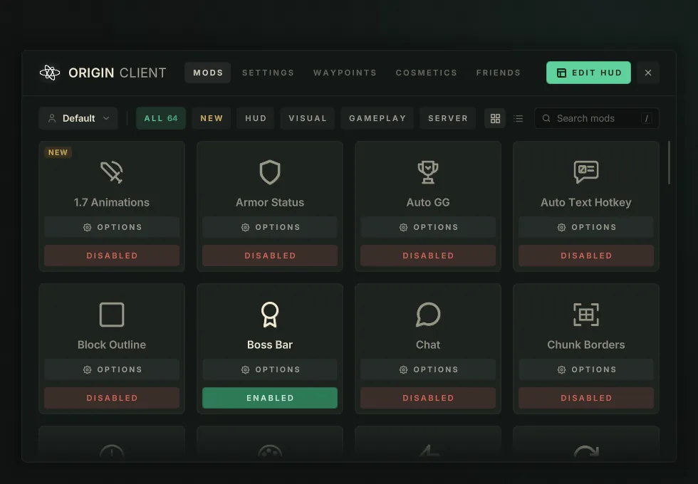
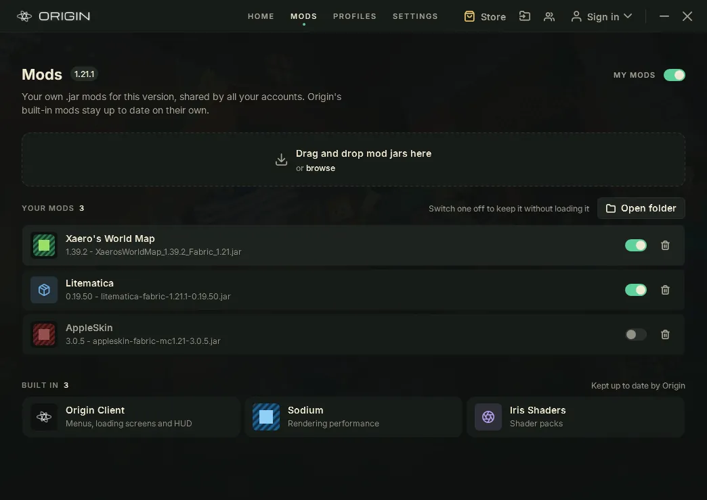

One launcher, 26 versions
Sign in with Microsoft, pick a version and press Play. Origin installs what that version needs, shaders included, and keeps itself up to date. You never choose a loader.
Origin is a free Minecraft launcher and in‑game client. For each of 26 versions, from 1.8.9 to 26.3, it sets up the right mods, shaders and its own clean menus. You just play.
Free · Windows 10 & 11 · a small installer that fetches the rest
Sign in with Microsoft, pick a version and press Play. Origin installs what that version needs, shaders included, and keeps itself up to date. You never choose a loader.

A clean title screen, loading screens, the Mod Menu and a HUD you can move where you like. They look the same on all 26, from 1.8.9 to 26.3.

Drop your .jar mods in next to Origin's. If one does the same job as an Origin mod, Origin's steps aside by itself, and you can switch it back on.
Origin is made separately for each version's own code, never one port stretched to fit. So the menus, HUD and mods look and work the same on all of them.
Free for Windows 10 and 11, Linux, and Mac as a beta. Origin keeps itself up to date.
Download for WindowsThe Mac version is new, so macOS doesn't know it yet and asks once before it opens.
Older Minecraft versions (1.8.9 to 1.18.2) run through Rosetta on Apple Silicon. Origin offers to install it the first time you need it.